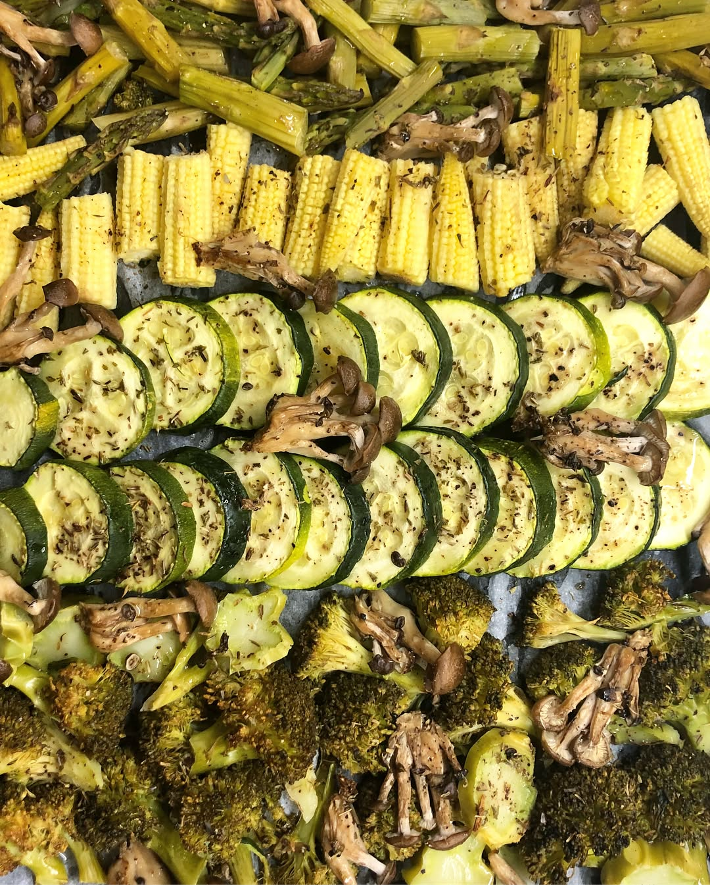

Baked veggies anyone? 😉 . . . . . Кому запечённые овощи? 😉 — #iromantri #triathlon #marathon #healthyfood #sportnutrition #swimbikerun #dietfood #ironmantraining #marathontraining #trailrun #foodblogger #foodography #saladbowl #salads #homemadefood #cookingathome #plantbasedfood #veganlove #veganfoodshare
2018-06-24 22:53:34
Back to main page